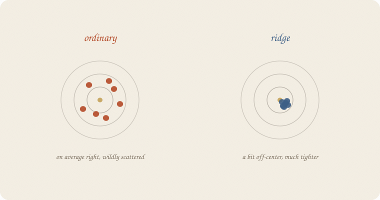
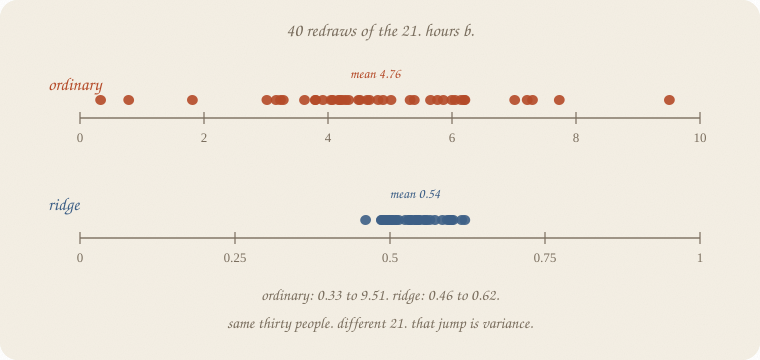
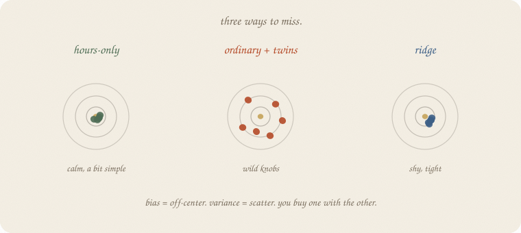
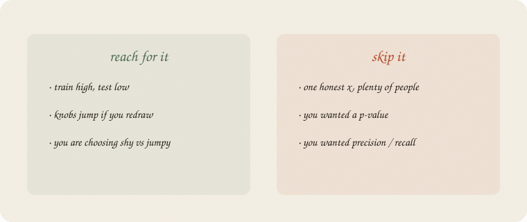

datazines · a sketchbook

Read 01 train test validate first. Same thirty graders, seed 7, same twins. Ridge already drew this dartboard (page 8). This notebook is that picture: leftover on new people, named.
Not a second ridge. Not a p-value (01 t-test). Metrics: 03 metrics.
Flip it like a notebook. One page = one idea. Done.
01 train test validate hid 9 people. Ordinary: train R² 0.955, test 0.626.
That gap is not “the model is bad.” It is two different sins that look the same on one split:
People call the jump variance. The shy sit bias.
Ridge’s dartboard: ordinary darts fly everywhere, on average near the bullseye. Ridge’s darts cluster, a bit off-center. Same trade. This page puts numbers on it.
Redraw the 21 / 9 split forty times. Same thirty people. Different hide. Fit ordinary. Read hours b.

Ordinary hours b: mean 4.76, sd 1.77, from 0.33 to 9.51.
That is not a slope. That is a fight with minutes, a new winner every redraw. Net effect still ≈ 0.93 grade per extra hour — a cancellation, as ridge said. The story jumps. That jump is variance.
Ridge, scaled, α = 10: hours b mean 0.54, sd 0.04, from 0.46 to 0.62.
Different units (scaled). Same lesson: the pile is tight. Redraw the 21, get almost the same knob.
Hours-only, no twins: b mean 0.96, sd 0.05. Calm. One honest x did not need a tax.
Ridge’s pile is not on the ordinary mean. It is smaller on purpose. The tax pulls knobs toward zero. Every redraw, a little shy.
That systematic miss is bias. Not a moral. A choice: sit off-center so you do not fly.
Hours-only is the other shy: it never sees sleep or tutor. Calm knobs, a bit simple. Test R² mean 0.70 — less than ordinary’s mean 0.79, and ordinary’s worst redraw is 0.54.
Ordinary: better on average, uglier on a bad hide. Ridge: a bit worse on average (test mean 0.77), less of a disaster (worst 0.60).
You are not trying to be unbiased and heroic. You are trying not to flail (02 ridge regression, page 8).

| machine | bias | variance | vibe |
|---|---|---|---|
| hours-only | a bit high (sleep ignored) | low | calm, simple |
| ordinary + twins | low on average | high | wild knobs |
| ridge | a bit high (shy) | low | tight pile |
There is no free dart in the bullseye every time. A deep tree hugs (variance). A stump is shy (bias). A forest votes the hug away (02 random forest). Same dartboard, different machine.
01 train test validate is how you see leftover on new people. This notebook is which leftover you bought.
If you keep only one thing:
jumpy knobs = variance. shy sit = bias. you buy one with the other.
Same thirty as 01 train test validate and ridge. 40 different 21 / 9 splits (random_state=0…39). Ordinary hours b vs ridge hours b (scaled, α = 10). House seed 7 for the people.
import numpy as np
from sklearn.linear_model import LinearRegression, Ridge
from sklearn.model_selection import train_test_split
from sklearn.pipeline import make_pipeline
from sklearn.preprocessing import StandardScaler
rng = np.random.default_rng(7)
n = 30
hours = rng.uniform(1, 6, n)
sleep = rng.uniform(4, 9, n)
tutor = (rng.random(n) > 0.6).astype(float)
coffee = rng.uniform(0, 4, n)
noise = rng.normal(0, 1, n)
minutes = hours * 60 + rng.normal(0, 3, n)
naps = sleep + rng.normal(0, 0.25, n)
grade = 1.8 + 0.9 * hours + 0.35 * sleep + 0.6 * tutor + rng.normal(0, 0.55, n)
X = np.column_stack([hours, minutes, sleep, naps, tutor, coffee, noise])
ols_h, rd_h, ols_te, rd_te, only_b, only_te = [], [], [], [], [], []
for s in range(40):
Xtr, Xte, ytr, yte = train_test_split(X, grade, test_size=0.3, random_state=s)
ols = LinearRegression().fit(Xtr, ytr)
rd = make_pipeline(StandardScaler(), Ridge(alpha=10)).fit(Xtr, ytr)
ols_h.append(ols.coef_[0])
rd_h.append(rd.named_steps["ridge"].coef_[0])
ols_te.append(ols.score(Xte, yte))
rd_te.append(rd.score(Xte, yte))
Htr, Hte, ytr2, yte2 = train_test_split(
hours.reshape(-1, 1), grade, test_size=0.3, random_state=s
)
m = LinearRegression().fit(Htr, ytr2)
only_b.append(m.coef_[0])
only_te.append(m.score(Hte, yte2))
def row(title, a):
a = np.array(a)
print(f"{title:20s} mean {a.mean():6.3f} sd {a.std(ddof=1):5.3f} "
f"min {a.min():6.3f} max {a.max():6.3f}")
print("40 redraws of 21 / 9")
row("OLS hours b", ols_h)
row("ridge hours (sc.)", rd_h)
row("OLS test R²", ols_te)
row("ridge test R²", rd_te)
row("hours-only b", only_b)
row("hours-only test R²", only_te)
40 redraws of 21 / 9
OLS hours b mean 4.762 sd 1.773 min 0.333 max 9.506
ridge hours (sc.) mean 0.541 sd 0.041 min 0.461 max 0.621
OLS test R² mean 0.788 sd 0.102 min 0.540 max 0.925
ridge test R² mean 0.772 sd 0.083 min 0.601 max 0.941
hours-only b mean 0.958 sd 0.052 min 0.864 max 1.102
hours-only test R² mean 0.698 sd 0.156 min 0.304 max 0.914
Ordinary hours b spans nine points. Ridge’s scaled hours b stays in a 0.16 window. Test R²: ordinary mean a hair higher, worst hide uglier (0.54 vs 0.60). Hours-only b is calm (0.96, planted 0.9) and loses on test because sleep and tutor never got a knob.
alpha=10 is the ridge demo, not the honest pick from 01. The dartboard does not care. sd is the jump. mean vs planted is the sit.
| word | meaning |
|---|---|
| variance | knobs jump when the people jump |
| bias | knobs sit off, every redraw |
| trade | shy vs jumpy — you buy one with the other |
| redraw | new train/test hide, same thirty |
Also called: jumpy = high variance · shy = high bias · hug the trainers = overfit.

Reach for it when train is high and test is low, or knobs jump if you redraw, and you are choosing shy vs jumpy.
Skip it when one honest x and plenty of people (hours-only was already calm); you wanted a p (01 t-test); you wanted precision / recall (metrics, next).
Pays you: a name for the gap on 01 train test validate. The dartboard from ridge, as a habit.
Costs you: bias and variance are not two numbers you read off one fit. You need redraws, or a story (twins, a tax, a stump). Not a third pile — that was 01.
Fundamentals 02. Jumpy vs shy. Next: 03 metrics — when accuracy lies. Not a p-value.
Flip it like a notebook. One page = one idea.